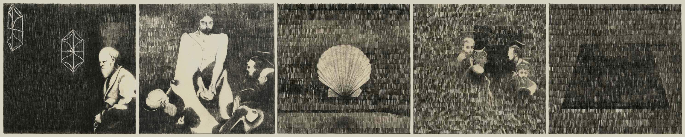
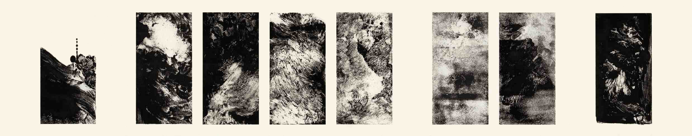
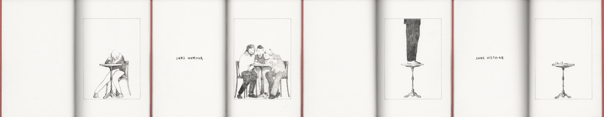
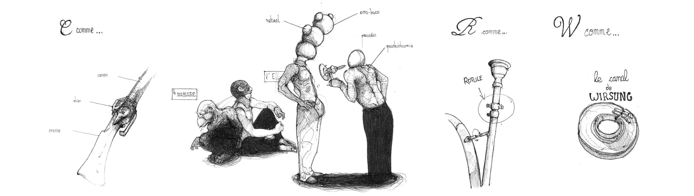

Ultima cenaÉtudes de composition lithographique

Technique mixte, 120 × 120 mm.
Vie de Baleine
Estampes sur verre

Ingres 80 g, reliure cabriolet, 40 pages, 121 × 174 mm.
Bistro RépubliqueCarnet de croquis

Grain fin 90 g, reliure japonaise, 32 pages, 104 × 150 mm.
Le petit inventaire du musée de la chasseCarnet de croquis en forme d’abécédaire

Exemplaire unique, leporello, 95 × 148 mm.